Last updated: 2021-09-10
Checks: 7 0
Knit directory: SMF/
This reproducible R Markdown analysis was created with workflowr (version 1.6.2). The Checks tab describes the reproducibility checks that were applied when the results were created. The Past versions tab lists the development history.
Great! Since the R Markdown file has been committed to the Git repository, you know the exact version of the code that produced these results.
Great job! The global environment was empty. Objects defined in the global environment can affect the analysis in your R Markdown file in unknown ways. For reproduciblity it’s best to always run the code in an empty environment.
The command set.seed(20190719) was run prior to running the code in the R Markdown file. Setting a seed ensures that any results that rely on randomness, e.g. subsampling or permutations, are reproducible.
Great job! Recording the operating system, R version, and package versions is critical for reproducibility.
Nice! There were no cached chunks for this analysis, so you can be confident that you successfully produced the results during this run.
Great job! Using relative paths to the files within your workflowr project makes it easier to run your code on other machines.
Great! You are using Git for version control. Tracking code development and connecting the code version to the results is critical for reproducibility.
The results in this page were generated with repository version 5d1ae92. See the Past versions tab to see a history of the changes made to the R Markdown and HTML files.
Note that you need to be careful to ensure that all relevant files for the analysis have been committed to Git prior to generating the results (you can use wflow_publish or wflow_git_commit). workflowr only checks the R Markdown file, but you know if there are other scripts or data files that it depends on. Below is the status of the Git repository when the results were generated:
Ignored files:
Ignored: .DS_Store
Ignored: .Rhistory
Ignored: .Rproj.user/
Ignored: analysis/.DS_Store
Ignored: data/.DS_Store
Ignored: data/external_data/
Untracked files:
Untracked: analysis/luis_data.Rmd
Untracked: code/wave_ebmf.R
Untracked: code/wave_ebmf_run.R
Untracked: data/luis/
Untracked: output/flash_on_cmc2_reduced.rds
Unstaged changes:
Modified: code/smooth_flash.R
Note that any generated files, e.g. HTML, png, CSS, etc., are not included in this status report because it is ok for generated content to have uncommitted changes.
These are the previous versions of the repository in which changes were made to the R Markdown (analysis/SmoothMF.Rmd) and HTML (docs/SmoothMF.html) files. If you’ve configured a remote Git repository (see ?wflow_git_remote), click on the hyperlinks in the table below to view the files as they were in that past version.
| File | Version | Author | Date | Message |
|---|---|---|---|---|
| Rmd | 5d1ae92 | Dongyue Xie | 2021-09-10 | wflow_publish(“analysis/SmoothMF.Rmd”) |
| html | 2180b49 | Dongyue Xie | 2019-10-08 | Build site. |
| html | 8c12025 | Dongyue Xie | 2019-07-23 | Build site. |
| Rmd | 2e047e3 | Dongyue Xie | 2019-07-23 | wflow_publish(c(“analysis/SmoothMF.Rmd”, “analysis/SmoothPMD.Rmd”)) |
| html | 666296b | Dongyue Xie | 2019-07-23 | Build site. |
| Rmd | cf686eb | Dongyue Xie | 2019-07-23 | wflow_publish(“analysis/SmoothMF.Rmd”) |
Consider a matrix factorization problem \[Y = LF+E,\]
where \(Y\) is a \(N\times p\) matrix, \(L\) is a \(N\times K\) matrix, \(F\) is a \(K\times p\) matrix and \(E\) is a \(N\times p\) matrix of residuals.
We assume each row of \(F\) is smooth or spatially-structured. Then each row of \(Y\) is from a smooth function/curve with added noises. Matrix \(L\) is assumed to be sparse.
The question is how to estimate \(L\) and \(F\).
This is very similar to functional principal component analysis, which considers finding weights and principal components of a collection of curves. A common approach is adding a roughness penalty of the weights to obtain smooth estimates.
Here, we consider using a specific basis to represent the smooth curves - wavelet. Let \(W\) be the discrete wavelet transformation(DWT) matrix. We perform wavelet decomnposition on both sides then \[YW=LFW+EW,\] or \[\tilde{Y} = L\tilde{F}+\tilde{E}.\]
Now each row of \(\tilde{F}\) is sparse. We can then apply penalized matrix factorization algorithm(mainly universal thresholding methods) to \(\tilde{Y}\) to obtain sparse estimates of \(L\) and \(\tilde{F}\). Applying inverse DWT gives \(\hat{F}\).
Applying empirical Bayes wavelet shrinkage methods needs extra steps to deal with each level separately.
In this simulation study, we choose EBMF framework and compare it with the wavelet approach.
library(wavethresh)
source("code/wave_ebmf.R")
library(flashr)
# wavelet-based matrix factorization
#'@ y: observed matrix
#'@ k: number of factors
#'@ filter.number, family: wavelet type
WaveEBMF = function(y,k,filter.number = 1,family = 'DaubExPhase'){
N=nrow(y)
p=ncol(y)
W = GenW(n=p,filter.number = filter.number,family = family)
y_tilde = y%*%W
f2 = flash(y_tilde,Kmax=k,var_type = 'constant',backfit = T,verbose=F)
f2_fitted = flash_get_ldf(f2)
f_hat = (W%*%f2_fitted$f)
return(list(f=f_hat,l=f2_fitted$l))
}Simulate \(N=200\) and \(p=256\) under single-factor model \[l_i\sim \pi_0\delta_0+(1-\pi_0)\sum_{m=1}^5\frac{1}{5}N(0,\sigma^2_m)\]
Step function factor
\(f\) is a step function.
rmse = function(x1,x2){sqrt(mean((x1-x2)^2))}
set.seed(12345)
N = 200
p = 256
pi0 = 0.3
f = c(rep(2,p/4), rep(5, p/4), rep(6, p/4), rep(2, p/4))
l = c(rep(0,N*pi0),rnorm(N*(1-pi0)/5,0,sqrt(0.25)),
rnorm(N*(1-pi0)/5,0,sqrt(0.5)),
rnorm(N*(1-pi0)/5,0,sqrt(1)),
rnorm(N*(1-pi0)/5,0,sqrt(2)),
rnorm(N*(1-pi0)/5,0,sqrt(4)))
plot(l)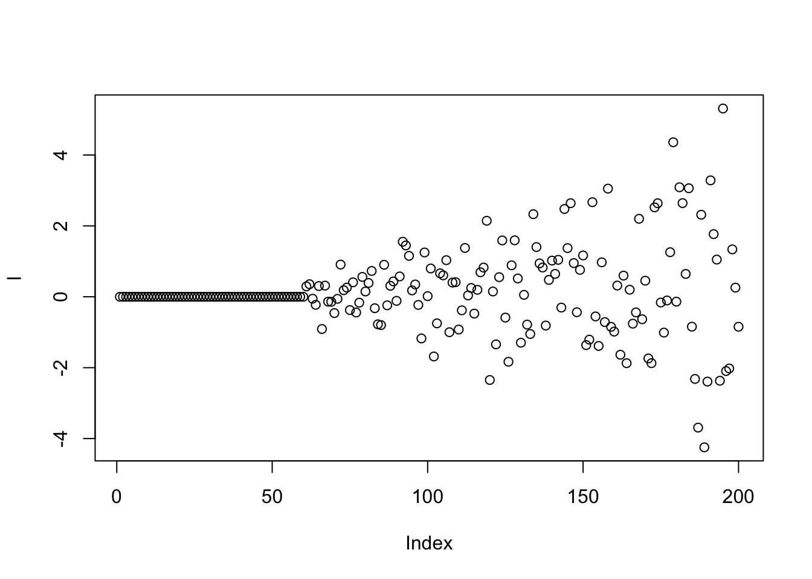
plot(f,type='l')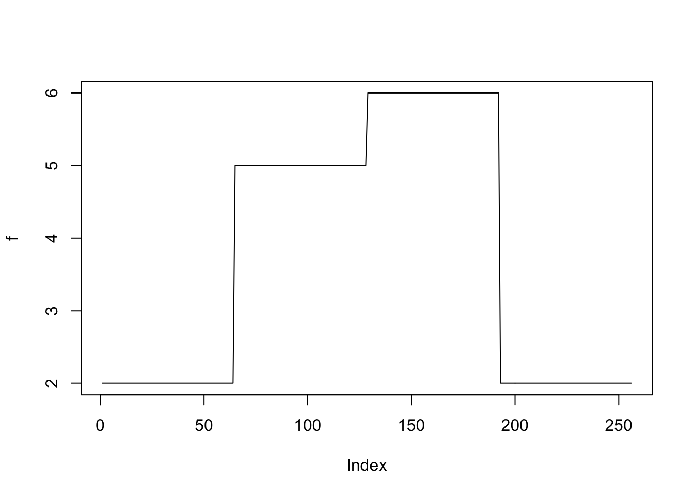
y = l%*%t(f)+matrix(rnorm(N*p,0,1),ncol=p)
# apply flash directly
f1 = flash(y,var_type = 'by_row',verbose=T)
# apply wavelet transform
# use Haar wavelet
f2 = wave_ebmf(y)[1] "Fitting dimension 1"
[1] "Iteration 1 : obj -73638.099"
[1] "Iteration 2 : obj -73638.089"
[1] "Iteration 3 : obj -73638.089"
[1] "Performing nullcheck"
[1] "Deleting factor 1 decreases objective by 707403.192"
[1] "Fitting dimension 2"
[1] "Iteration 1 : obj -73681.482"
[1] "Iteration 2 : obj -73668.767"
[1] "Iteration 3 : obj -73666.69"
[1] "Iteration 4 : obj -73665.674"
[1] "Iteration 5 : obj -73664.999"
[1] "Iteration 6 : obj -73664.493"
[1] "Iteration 7 : obj -73664.096"
[1] "Iteration 8 : obj -73663.779"
[1] "Iteration 9 : obj -73663.508"
[1] "Iteration 10 : obj -73663.265"
[1] "Iteration 11 : obj -73663.031"
[1] "Iteration 12 : obj -73662.794"
[1] "Iteration 13 : obj -73662.553"
[1] "Iteration 14 : obj -73662.292"
[1] "Iteration 15 : obj -73662.009"
[1] "Iteration 16 : obj -73661.721"
[1] "Iteration 17 : obj -73661.451"
[1] "Iteration 18 : obj -73661.217"
[1] "Iteration 19 : obj -73661.02"
[1] "Iteration 20 : obj -73660.856"
[1] "Iteration 21 : obj -73660.715"
[1] "Iteration 22 : obj -73660.593"
[1] "Iteration 23 : obj -73660.482"
[1] "Iteration 24 : obj -73660.379"
[1] "Iteration 25 : obj -73660.281"
[1] "Iteration 26 : obj -73660.182"
[1] "Iteration 27 : obj -73660.077"
[1] "Iteration 28 : obj -73659.963"
[1] "Iteration 29 : obj -73659.831"
[1] "Iteration 30 : obj -73659.669"
[1] "Iteration 31 : obj -73659.45"
[1] "Iteration 32 : obj -73659.114"
[1] "Iteration 33 : obj -73658.539"
[1] "Iteration 34 : obj -73657.483"
[1] "Iteration 35 : obj -73655.506"
[1] "Iteration 36 : obj -73651.812"
[1] "Iteration 37 : obj -73646.198"
[1] "Iteration 38 : obj -73643.742"
[1] "Iteration 39 : obj -73642.806"
[1] "Iteration 40 : obj -73642.387"
[1] "Iteration 41 : obj -73642.187"
[1] "Iteration 42 : obj -73642.061"
[1] "Iteration 43 : obj -73641.975"
[1] "Iteration 44 : obj -73641.91"
[1] "Iteration 45 : obj -73641.856"
[1] "Iteration 46 : obj -73641.808"
[1] "Iteration 47 : obj -73641.761"
[1] "Iteration 48 : obj -73641.713"
[1] "Iteration 49 : obj -73641.661"
[1] "Iteration 50 : obj -73641.601"
[1] "Iteration 51 : obj -73641.527"
[1] "Iteration 52 : obj -73641.426"
[1] "Iteration 53 : obj -73641.266"
[1] "Iteration 54 : obj -73640.978"
[1] "Iteration 55 : obj -73640.466"
[1] "Iteration 56 : obj -73639.954"
[1] "Iteration 57 : obj -73639.759"
[1] "Iteration 58 : obj -73639.7"
[1] "Iteration 59 : obj -73639.674"
[1] "Iteration 60 : obj -73639.658"
[1] "Iteration 61 : obj -73639.648"
[1] "Iteration 62 : obj -73639.64"
[1] "Performing nullcheck"
[1] "Deleting factor 2 increases objective by 1.552"paste('RMSE of flash estimate:',round(rmse(f1$fitted_values,l%*%t(f)),5))[1] "RMSE of flash estimate: 0.09078"paste('RMSE of wave_ebmf estimate:',round(rmse(f2$fitted_values,l%*%t(f)),5))[1] "RMSE of wave_ebmf estimate: 0.05862"plot(f1$ldf$f,col = 2,type='l',xlab='',ylab='',main='flash')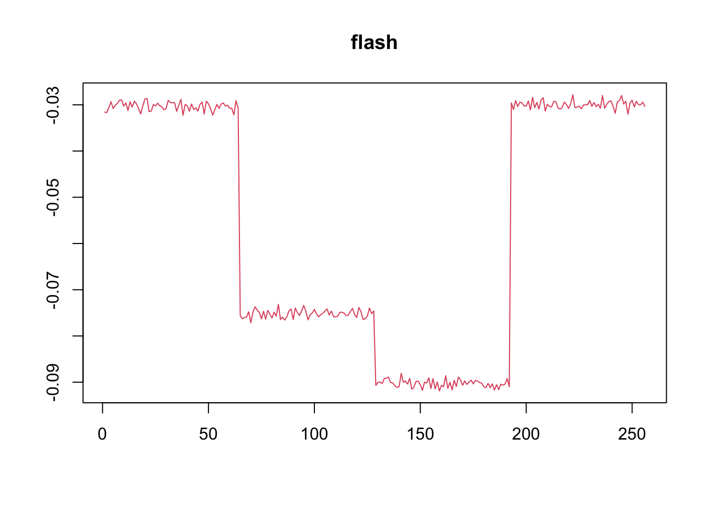
plot(f2$ldf$f,col = 2,type='l',xlab='',ylab='',main='wave flash')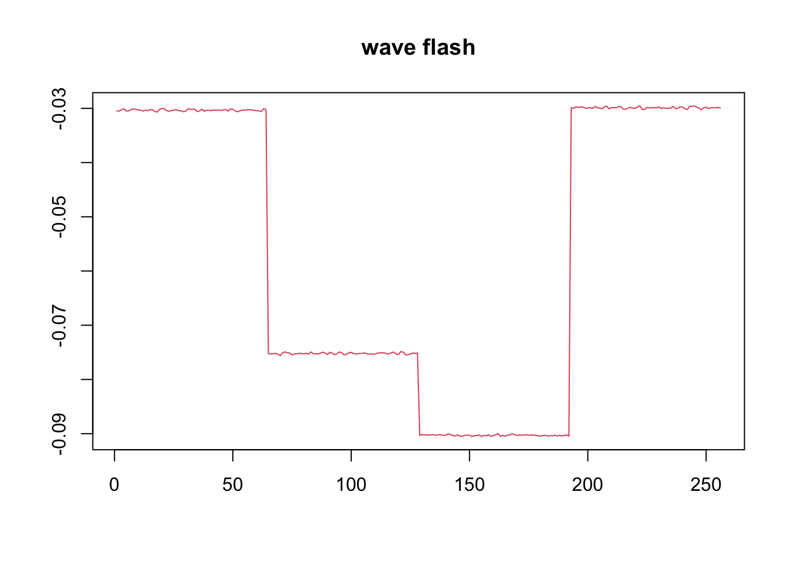
HeavySine function factor
f=DJ.EX(p,signal = 2)$heavi
y = l%*%t(f)+matrix(rnorm(N*p,0,1),ncol=p)
# apply flash directly
f1 = flash(y,var_type = 'by_row')
# apply wavelet transform
# use symmlet10
f2 = wave_ebmf(y)[1] "Fitting dimension 1"
[1] "Iteration 1 : obj -74024.885"
[1] "Iteration 2 : obj -74024.863"
[1] "Iteration 3 : obj -74024.863"
[1] "Performing nullcheck"
[1] "Deleting factor 1 decreases objective by 170989.651"
[1] "Fitting dimension 2"
[1] "Iteration 1 : obj -74081.834"
[1] "Iteration 2 : obj -74063.743"
[1] "Iteration 3 : obj -74056.806"
[1] "Iteration 4 : obj -74051.167"
[1] "Iteration 5 : obj -74046.912"
[1] "Iteration 6 : obj -74043.723"
[1] "Iteration 7 : obj -74041.294"
[1] "Iteration 8 : obj -74039.529"
[1] "Iteration 9 : obj -74038.525"
[1] "Iteration 10 : obj -74038.097"
[1] "Iteration 11 : obj -74037.838"
[1] "Iteration 12 : obj -74037.698"
[1] "Iteration 13 : obj -74037.644"
[1] "Iteration 14 : obj -74037.625"
[1] "Iteration 15 : obj -74037.617"
[1] "Performing nullcheck"
[1] "Deleting factor 2 increases objective by 12.754"paste('RMSE of flash estimate:',round(rmse(f1$fitted_values,l%*%t(f)),5))[1] "RMSE of flash estimate: 0.08585"paste('RMSE of wave_ebmf estimate:',round(rmse(f2$fitted_values,l%*%t(f)),5))[1] "RMSE of wave_ebmf estimate: 0.07903"plot(f1$ldf$f,col = 2,type='l',xlab='',ylab='',main='flash')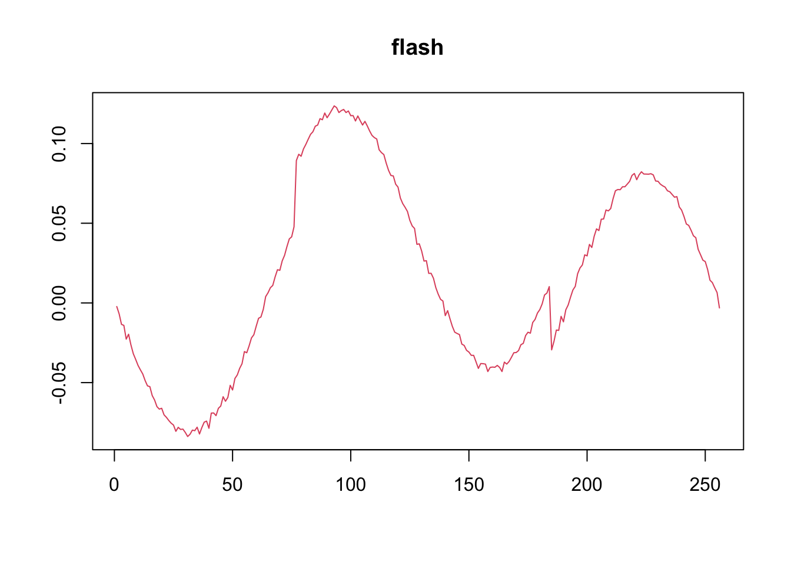
plot(f2$ldf$f,col = 2,type='l',xlab='',ylab='',main='wave flash')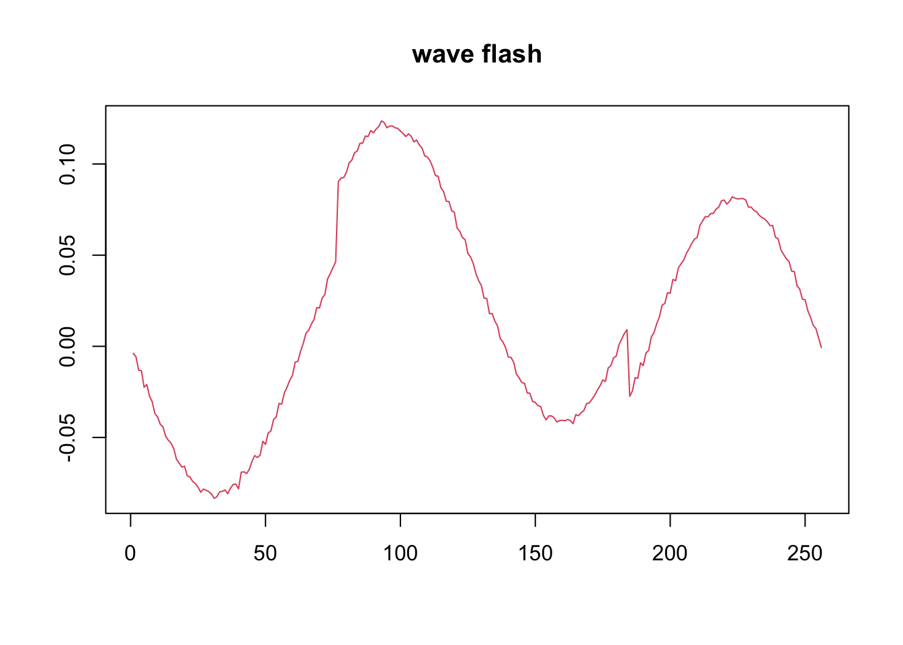
Spike function factor
spike.f = function(x) (0.75 * exp(-500 * (x - 0.23)^2) + 1.5 * exp(-2000 * (x - 0.33)^2) + 3 * exp(-8000 * (x - 0.47)^2) + 2.25 * exp(-16000 *
(x - 0.69)^2) + 0.5 * exp(-32000 * (x - 0.83)^2))
t = 1:p/p
f = 2*spike.f(t)
y = l%*%t(f)+matrix(rnorm(N*p,0,1),ncol=p)
f1 = flash(y,var_type = 'by_row')
# apply wavelet transform
# use symmlet10
f2 = wave_ebmf(y)[1] "Fitting dimension 1"
[1] "Iteration 1 : obj -73980.749"
[1] "Iteration 2 : obj -73980.583"
[1] "Iteration 3 : obj -73980.583"
[1] "Performing nullcheck"
[1] "Deleting factor 1 decreases objective by 37573.625"
[1] "Fitting dimension 2"
[1] "Iteration 1 : obj -74042.226"
[1] "Iteration 2 : obj -74022.248"
[1] "Iteration 3 : obj -74014.302"
[1] "Iteration 4 : obj -74008.223"
[1] "Iteration 5 : obj -74003.707"
[1] "Iteration 6 : obj -74000.753"
[1] "Iteration 7 : obj -73998.952"
[1] "Iteration 8 : obj -73997.883"
[1] "Iteration 9 : obj -73997.115"
[1] "Iteration 10 : obj -73996.623"
[1] "Iteration 11 : obj -73996.316"
[1] "Iteration 12 : obj -73996.056"
[1] "Iteration 13 : obj -73995.722"
[1] "Iteration 14 : obj -73995.136"
[1] "Iteration 15 : obj -73993.959"
[1] "Iteration 16 : obj -73993.263"
[1] "Iteration 17 : obj -73992.925"
[1] "Iteration 18 : obj -73992.735"
[1] "Iteration 19 : obj -73992.391"
[1] "Iteration 20 : obj -73991.613"
[1] "Iteration 21 : obj -73990.415"
[1] "Iteration 22 : obj -73989.927"
[1] "Iteration 23 : obj -73989.852"
[1] "Iteration 24 : obj -73989.825"
[1] "Iteration 25 : obj -73989.813"
[1] "Iteration 26 : obj -74001.467"
[1] "An iteration decreased the objective"
[1] "Performing nullcheck"
[1] "Deleting factor 2 increases objective by 20.883"paste('RMSE of flash estimate:',round(rmse(f1$fitted_values,l%*%t(f)),5))[1] "RMSE of flash estimate: 0.07364"paste('RMSE of wave_ebmf estimate:',round(rmse(f2$fitted_values,l%*%t(f)),5))[1] "RMSE of wave_ebmf estimate: 0.07729"plot(f1$ldf$f,col = 2,type='l',xlab='',ylab='',main='flash')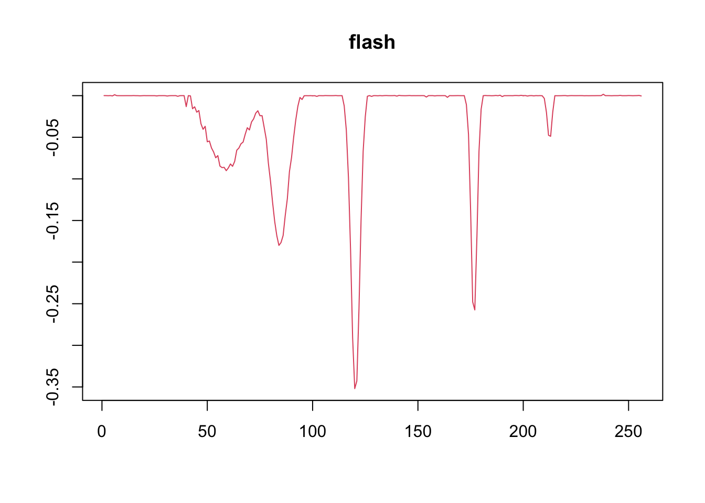
plot(f2$ldf$f,col = 2,type='l',xlab='',ylab='',main='wave flash')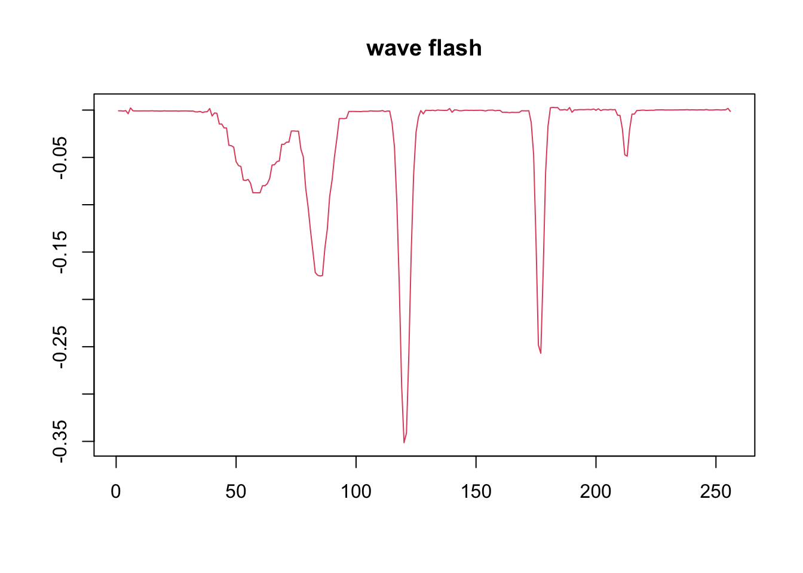
Simulate \(N=200\) and \(p=256\) under the factor model \[l_i\sim \pi_0\delta_0+(1-\pi_0)\sum_{m=1}^5\frac{1}{5}N(0,\sigma^2_m)\]
We set \(K=3\) and three factors are step function, Heavysine and spike functions.
K=3
set.seed(12345)
l1 = c(rep(0,N*pi0),rnorm(N*(1-pi0)/5,0,sqrt(0.25)),
rnorm(N*(1-pi0)/5,0,sqrt(0.5)),
rnorm(N*(1-pi0)/5,0,sqrt(1)),
rnorm(N*(1-pi0)/5,0,sqrt(2)),
rnorm(N*(1-pi0)/5,0,sqrt(4)))
l1 = l1[sample(1:N)]
l2 = c(rep(0,N*pi0),rnorm(N*(1-pi0)/5,0,sqrt(0.25)),
rnorm(N*(1-pi0)/5,0,sqrt(0.5)),
rnorm(N*(1-pi0)/5,0,sqrt(1)),
rnorm(N*(1-pi0)/5,0,sqrt(2)),
rnorm(N*(1-pi0)/5,0,sqrt(4)))
l2 = l2[sample(1:N)]
l3 = c(rep(0,N*pi0),rnorm(N*(1-pi0)/5,0,sqrt(0.25)),
rnorm(N*(1-pi0)/5,0,sqrt(0.5)),
rnorm(N*(1-pi0)/5,0,sqrt(1)),
rnorm(N*(1-pi0)/5,0,sqrt(2)),
rnorm(N*(1-pi0)/5,0,sqrt(4)))
l3 = l3[sample(1:N)]
L = cbind(l1,l2,l3)
f_1 = c(rep(2,p/4), rep(5, p/4), rep(6, p/4), rep(2, p/4))
f_2 = DJ.EX(p,signal = 2)$heavi
f_3 = 2*spike.f(t)
FF = rbind(f_1,f_2,f_3)
E = matrix(rnorm(N*p,0,1),ncol=p)
Y = L%*%FF + E
# apply flash directly
f1 = flash(Y,var_type = 'by_row')
# apply wavelet transform
# use symmlet10
f2 = wave_ebmf(Y)[1] "Fitting dimension 1"
[1] "Iteration 1 : obj -179747.607"
[1] "Iteration 2 : obj -179747.084"
[1] "Iteration 3 : obj -179747.081"
[1] "Performing nullcheck"
[1] "Deleting factor 1 decreases objective by 652820.059"
[1] "Fitting dimension 2"
[1] "Iteration 1 : obj -96568.755"
[1] "Iteration 2 : obj -96567.425"
[1] "Iteration 3 : obj -96567.343"
[1] "Iteration 4 : obj -96567.337"
[1] "Performing nullcheck"
[1] "Deleting factor 2 decreases objective by 83179.743"
[1] "Fitting dimension 3"
[1] "Iteration 1 : obj -75674.423"
[1] "Iteration 2 : obj -75674.025"
[1] "Iteration 3 : obj -75674.025"
[1] "Performing nullcheck"
[1] "Deleting factor 3 decreases objective by 20893.313"
[1] "Fitting dimension 4"
[1] "Iteration 1 : obj -75720.753"
[1] "Iteration 2 : obj -75705.477"
[1] "Iteration 3 : obj -75699.767"
[1] "Iteration 4 : obj -75693.126"
[1] "Iteration 5 : obj -75685.836"
[1] "Iteration 6 : obj -75680.251"
[1] "Iteration 7 : obj -75676.621"
[1] "Iteration 8 : obj -75674.663"
[1] "Iteration 9 : obj -75673.366"
[1] "Iteration 10 : obj -75672.043"
[1] "Iteration 11 : obj -75670.659"
[1] "Iteration 12 : obj -75670.169"
[1] "Iteration 13 : obj -75670.006"
[1] "Iteration 14 : obj -75669.922"
[1] "Iteration 15 : obj -75669.859"
[1] "Iteration 16 : obj -75669.793"
[1] "Iteration 17 : obj -75669.711"
[1] "Iteration 18 : obj -75669.603"
[1] "Iteration 19 : obj -75669.485"
[1] "Iteration 20 : obj -75669.393"
[1] "Iteration 21 : obj -75669.33"
[1] "Iteration 22 : obj -75669.28"
[1] "Iteration 23 : obj -75669.229"
[1] "Iteration 24 : obj -75669.172"
[1] "Iteration 25 : obj -75669.102"
[1] "Iteration 26 : obj -75669.014"
[1] "Iteration 27 : obj -75668.906"
[1] "Iteration 28 : obj -75668.78"
[1] "Iteration 29 : obj -75668.641"
[1] "Iteration 30 : obj -75668.502"
[1] "Iteration 31 : obj -75668.36"
[1] "Iteration 32 : obj -75668.169"
[1] "Iteration 33 : obj -75667.848"
[1] "Iteration 34 : obj -75667.325"
[1] "Iteration 35 : obj -75666.641"
[1] "Iteration 36 : obj -75665.975"
[1] "Iteration 37 : obj -75665.284"
[1] "Iteration 38 : obj -75664.398"
[1] "Iteration 39 : obj -75664.091"
[1] "Iteration 40 : obj -75664.025"
[1] "Iteration 41 : obj -75663.971"
[1] "Iteration 42 : obj -75663.894"
[1] "Iteration 43 : obj -75663.754"
[1] "Iteration 44 : obj -75663.536"
[1] "Iteration 45 : obj -75663.361"
[1] "Iteration 46 : obj -75663.3"
[1] "Iteration 47 : obj -75663.282"
[1] "Iteration 48 : obj -75663.273"
[1] "Performing nullcheck"
[1] "Deleting factor 4 decreases objective by 10.751"
[1] "Fitting dimension 5"
[1] "Iteration 1 : obj -75722.72"
[1] "Iteration 2 : obj -75704.834"
[1] "Iteration 3 : obj -75699.428"
[1] "Iteration 4 : obj -75695.152"
[1] "Iteration 5 : obj -75690.396"
[1] "Iteration 6 : obj -75684.3"
[1] "Iteration 7 : obj -75682.219"
[1] "Iteration 8 : obj -75681.252"
[1] "Iteration 9 : obj -75680.528"
[1] "Iteration 10 : obj -75680.054"
[1] "Iteration 11 : obj -75679.548"
[1] "Iteration 12 : obj -75678.775"
[1] "Iteration 13 : obj -75678.019"
[1] "Iteration 14 : obj -75677.666"
[1] "Iteration 15 : obj -75677.44"
[1] "Iteration 16 : obj -75677.184"
[1] "Iteration 17 : obj -75676.85"
[1] "Iteration 18 : obj -75676.447"
[1] "Iteration 19 : obj -75676.04"
[1] "Iteration 20 : obj -75675.617"
[1] "Iteration 21 : obj -75675.098"
[1] "Iteration 22 : obj -75674.552"
[1] "Iteration 23 : obj -75674.129"
[1] "Iteration 24 : obj -75673.789"
[1] "Iteration 25 : obj -75673.493"
[1] "Iteration 26 : obj -75673.236"
[1] "Iteration 27 : obj -75673.006"
[1] "Iteration 28 : obj -75672.772"
[1] "Iteration 29 : obj -75672.498"
[1] "Iteration 30 : obj -75672.165"
[1] "Iteration 31 : obj -75671.746"
[1] "Iteration 32 : obj -75671.005"
[1] "Iteration 33 : obj -75669.273"
[1] "Iteration 34 : obj -75667.532"
[1] "Iteration 35 : obj -75667.212"
[1] "Iteration 36 : obj -75667.088"
[1] "Iteration 37 : obj -75666.983"
[1] "Iteration 38 : obj -75666.866"
[1] "Iteration 39 : obj -75666.706"
[1] "Iteration 40 : obj -75666.418"
[1] "Iteration 41 : obj -75667.149"
[1] "An iteration decreased the objective"
[1] "Performing nullcheck"
[1] "Deleting factor 5 increases objective by 3.875"plot(f1$ldf$f[,1],type='l')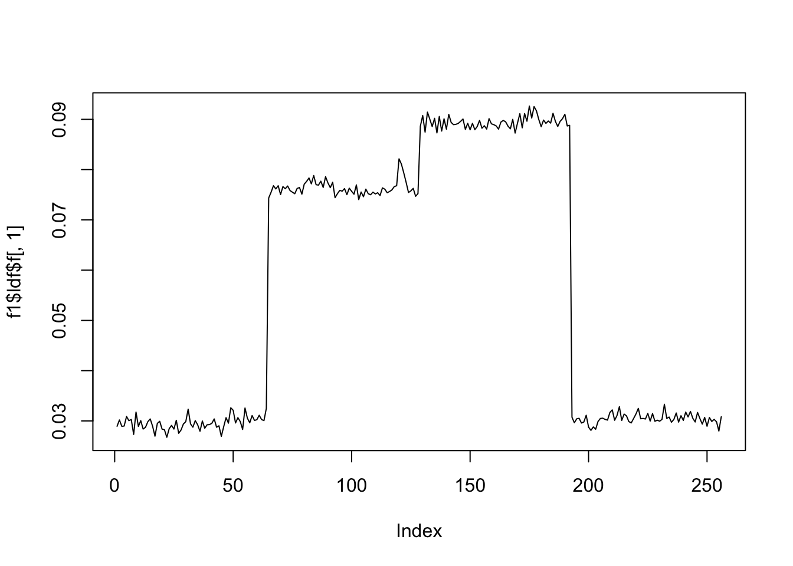
plot(f1$ldf$f[,2],type='l')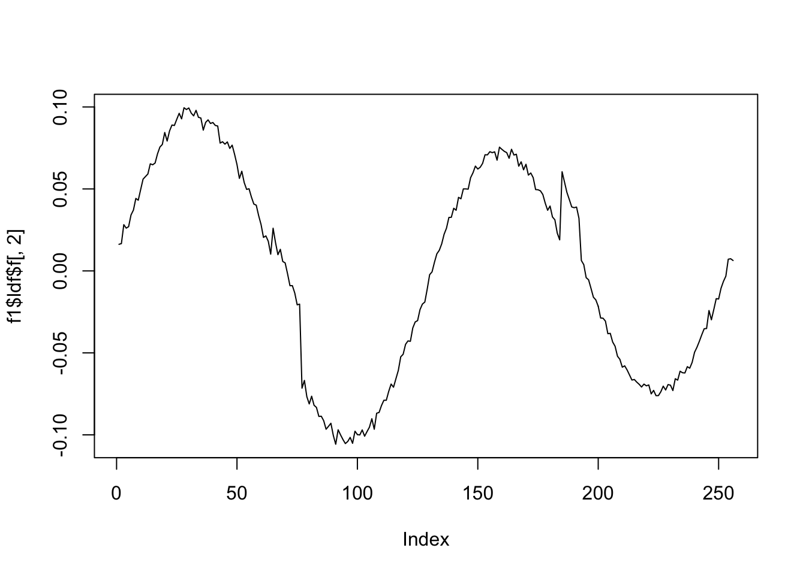
plot(f1$ldf$f[,3],type='l')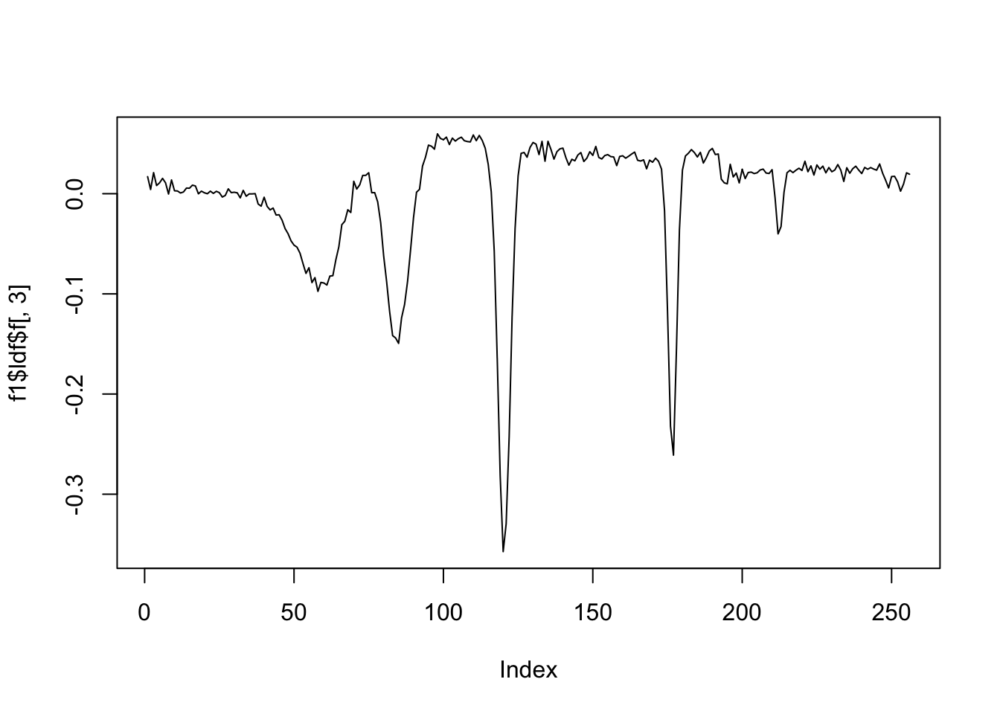
plot(f2$ldf$f[,1],type='l')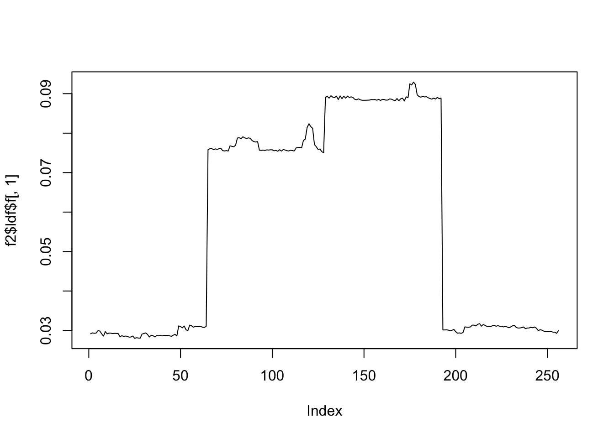
plot(f2$ldf$f[,2],type='l')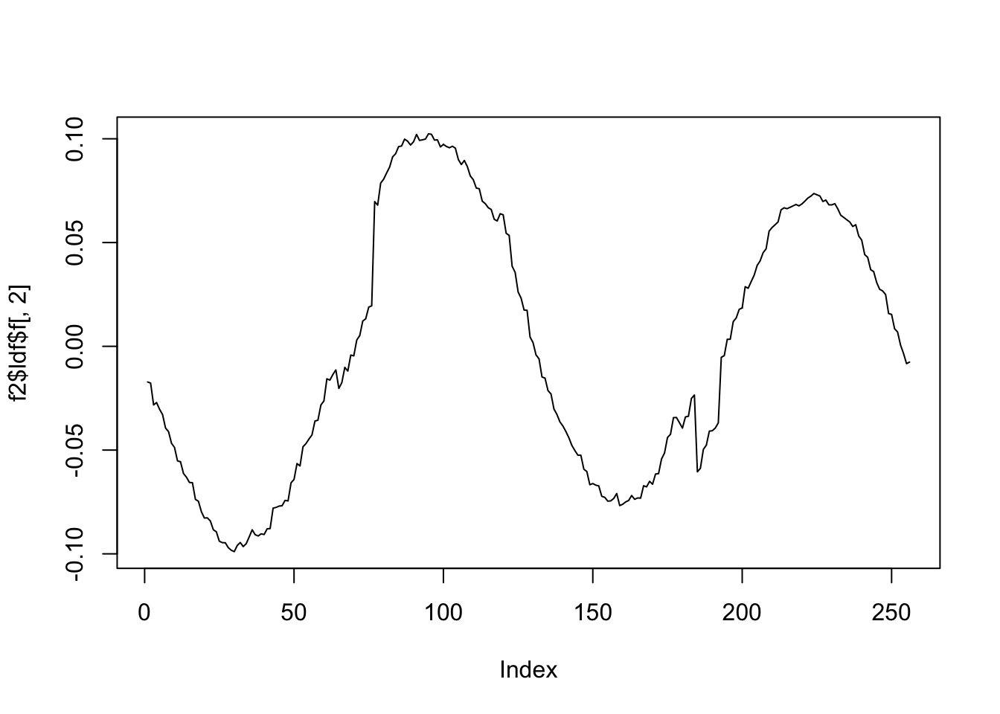
plot(f2$ldf$f[,3],type='l')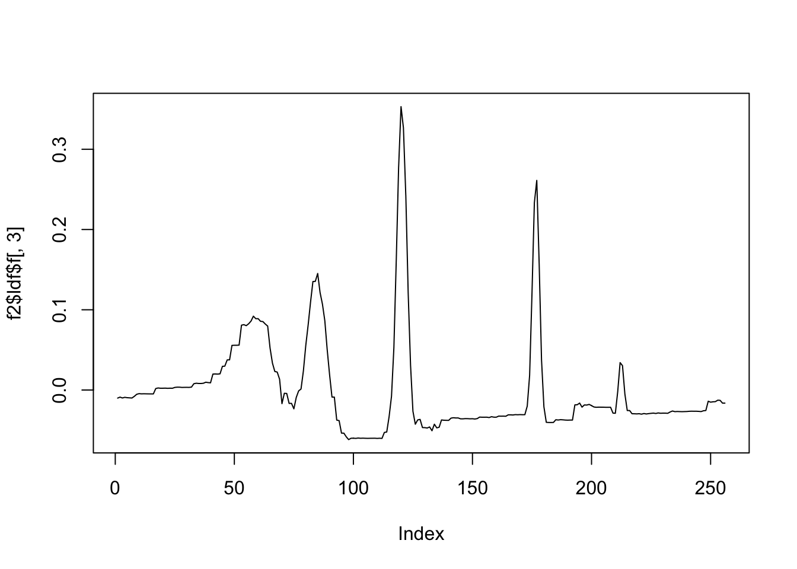
sessionInfo()R version 4.0.3 (2020-10-10)
Platform: x86_64-apple-darwin17.0 (64-bit)
Running under: macOS High Sierra 10.13.6
Matrix products: default
BLAS: /Library/Frameworks/R.framework/Versions/4.0/Resources/lib/libRblas.dylib
LAPACK: /Library/Frameworks/R.framework/Versions/4.0/Resources/lib/libRlapack.dylib
locale:
[1] en_US.UTF-8/en_US.UTF-8/en_US.UTF-8/C/en_US.UTF-8/en_US.UTF-8
attached base packages:
[1] stats graphics grDevices utils datasets methods base
other attached packages:
[1] flashr_0.6-7 testthat_3.0.0 wavethresh_4.6.8 MASS_7.3-53
[5] workflowr_1.6.2
loaded via a namespace (and not attached):
[1] pkgload_1.1.0 splines_4.0.3 assertthat_0.2.1 horseshoe_0.2.0
[5] mixsqp_0.3-43 deconvolveR_1.2-1 yaml_2.2.1 remotes_2.2.0
[9] sessioninfo_1.1.1 ebnm_0.1-50 pillar_1.4.6 backports_1.1.10
[13] lattice_0.20-41 glue_1.4.2 digest_0.6.27 promises_1.1.1
[17] colorspace_1.4-1 htmltools_0.5.1.1 httpuv_1.5.4 Matrix_1.2-18
[21] plyr_1.8.6 pkgconfig_2.0.3 devtools_2.3.2 invgamma_1.1
[25] purrr_0.3.4 scales_1.1.1 processx_3.5.1 whisker_0.4
[29] later_1.1.0.1 git2r_0.27.1 tibble_3.0.4 generics_0.1.0
[33] ggplot2_3.3.2 usethis_1.6.3 ellipsis_0.3.1 withr_2.3.0
[37] ashr_2.2-47 cli_2.4.0 magrittr_2.0.1 crayon_1.3.4
[41] memoise_1.1.0 evaluate_0.14 ps_1.4.0 fs_1.5.0
[45] truncnorm_1.0-8 pkgbuild_1.1.0 tools_4.0.3 prettyunits_1.1.1
[49] softImpute_1.4 REBayes_2.2 lifecycle_1.0.0 stringr_1.4.0
[53] trust_0.1-8 munsell_0.5.0 irlba_2.3.3 callr_3.6.0
[57] compiler_4.0.3 rlang_0.4.10 grid_4.0.3 rstudioapi_0.11
[61] rmarkdown_2.5 gtable_0.3.0 DBI_1.1.0 reshape2_1.4.4
[65] R6_2.4.1 knitr_1.30 dplyr_1.0.5 rprojroot_1.3-2
[69] desc_1.2.0 stringi_1.5.3 SQUAREM_2020.5 Rcpp_1.0.5
[73] vctrs_0.3.7 tidyselect_1.1.0 xfun_0.18